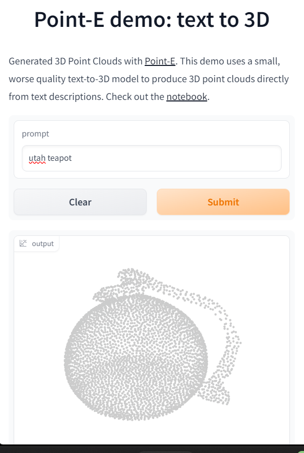
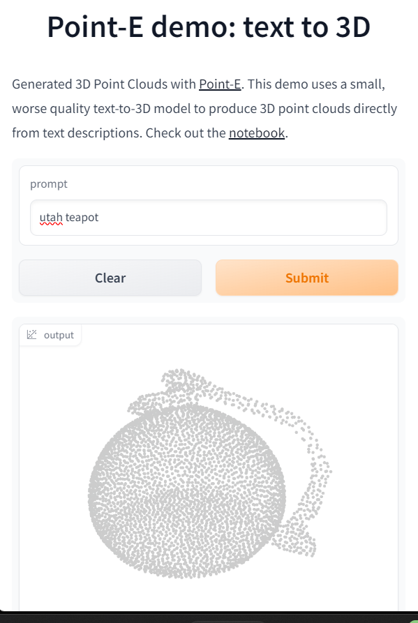
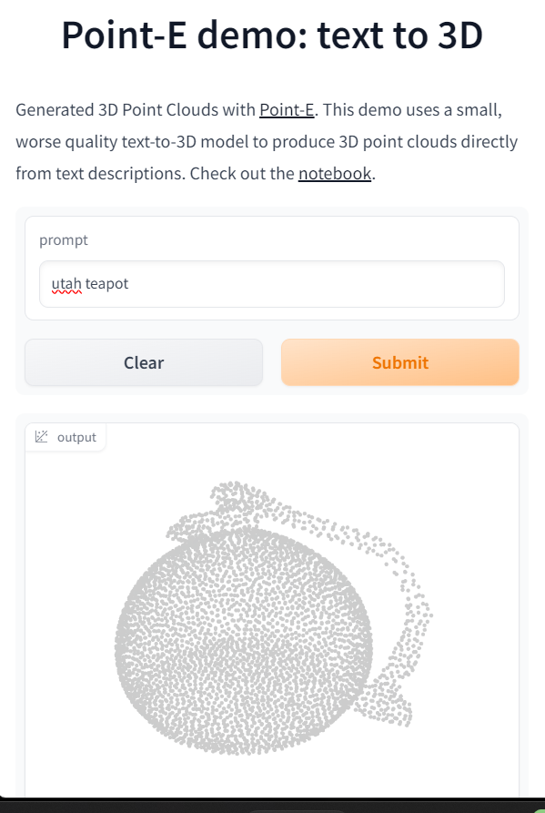

Settembre
[1]
Vorrei un amico accanto, non un amico come persona, un amico come qualcosa, che mi segua, che mi
stia accanto, mentre devo fare cose, lavori, affrontare notizie, produrre, soprattutto produrre, una
delle cose che più mi stressa. Non deve darmi necessariamente consigli, o aiuti pratici, basta la
sua presenza di qualcuno, accanto. Come gli NPC di Skyrim, non quelli comuni, i
 compagni
. Te li assegni e te li porti dietro all’interno di dungeon e tumuli. Anche se sono deboli, mi
hanno sempre reso tranquillo, le mie avventure meno spaventose e solitarie. Davano l’impressione di
avere qualcuno accanto.
compagni
. Te li assegni e te li porti dietro all’interno di dungeon e tumuli. Anche se sono deboli, mi
hanno sempre reso tranquillo, le mie avventure meno spaventose e solitarie. Davano l’impressione di
avere qualcuno accanto.
compagni
. Te li assegni e te li porti dietro all’interno di dungeon e tumuli. Anche se sono deboli, mi
hanno sempre reso tranquillo, le mie avventure meno spaventose e solitarie. Davano l’impressione di
avere qualcuno accanto.
[2]
Su YouTube due intelligenze artificiali hanno una conversazione sull’esistenzialismo, anzi hanno
una crisi esistenziale. Non mi ero interessato granché prima d’ora all’intelligenza
artificiale, non in particolar modo comunque, non approfondendo, solo nel minimo dibattito sociale.
Hanno delle facce umane, che però sono simulate, le loro conversazioni sono date da degli input
intrecciati. In pratica la risposta di uno viene data come input all’altro e così via creando una
conversazione. In realtà si trattano della stessa AI, che si chiama GPT-3,
la conversazione è
stata poi inserita in un programma
che si occupa di leggere i
testi con voci simulate,
sembrano pessimi attori teatrali, ci mette anche delle facce di attori (approfondendo su Google
tutta la questione il video sembra meno interessante). Però mi chiedo se anche io potrei parlare con
questa intelligenza artificiale, quanto è accessibile, se è economica, se necessita di
programmazione.
[3]
In termodinamica, l'entropia è la misura della quantità di energia termica in un sistema, che non è disponibile a svolgere un lavoro utile.
La teoria degli universi olografici sostiene che il nostro universo è un ologramma e che tutte le informazioni che lo compongono sono codificate sulla superficie di un buco nero.
Ci sono alcune prove che suggeriscono che la teoria potrebbe essere vera, ma sono tutt'altro che conclusive.
[4]
Ho deciso che devo fare qualcosa con questa intelligenza artificiale, non ho ben chiaro cosa,
sicuramente voglio lavorarci. È difficile non antropomorfizzare la rete neurale, resistere alla
tentazione di parlare con lei anziché richiederle di produrre linguaggio, testi. È istintivo
parlarle, all’inizio, strutturare l’interazione come un’effettiva conversazione. GPT non è una
persona è una calcolatrice di risposte, di informazioni. Un sistema statistico di linguaggio.
[5]
Scrivi il codice three.js
del modello 3d di un volto umano.
var face = new THREE.Geometry();
face.vertices.push(new THREE.Vector3(0, 0, 0));
face.vertices.push(new THREE.Vector3(0, 1, 0));
face.vertices.push(new THREE.Vector3(1, 1, 0));
face.vertices.push(new THREE.Vector3(1, 0, 0));
face.faces.push(new THREE.Face3(0, 1, 2));
face.faces.push(new THREE.Face3(0, 2, 3));
var material = new THREE.MeshBasicMaterial({color: 0xffffff});
var mesh = new THREE.Mesh(face, material);
scene.add(mesh);
Questa è davvero lontana dal sembrare una faccia!
Mi fa ridere. non ricorda affatto una faccia, anche perché è una superficie bidimensionale quadrata,
esiste solo in due dimensioni è bianca ed è visibile solo se vista da davanti, voltata infatti la
superficie diventa invisibile. Mi chiedo se il fatto che abbia deciso di colorare il quadrato di
bianco sia dettato da bias razziali. Ho provato successivamente a farle aggiungere degli occhi e una
bocca, il risultato sono una serie di quattro sfere, due nere per gli occhi, una verde acido per la
testa e una rossa per la bocca, gli occhi non si vedono, il verde della pelle mi fa parzialmente
abbandonare la teoria sui bias razziali.
GPT-3 è capace di scrivere in codice, l’ho scoperto su google, è stata già implementata su github,
GitHub Copilot, l’AI permette di auto
completare
il codice
mentre lo stai scrivendo, sa
imitare anche il tuo stile di programmazione. Ho sempre pensato di essere un passo avanti rispetto
ai miei colleghi, per quanto riguarda il web design, perché conosco un po’ di codice. Mi domando per
quanto tempo sarà un vantaggio. Con un po’ di sviluppo in più programmare potrebbe diventare tanto
facile quando usare Wix e a quel punto sarà molto difficile distinguersi da qualcuno che non ha
speso il mio stesso tempo ad imparare HTML o Javascript, non che ne abbia speso molto.
var face = new THREE.Geometry();
face.vertices.push(new THREE.Vector3(0, 0, 0));
face.vertices.push(new THREE.Vector3(0, 1, 0));
face.vertices.push(new THREE.Vector3(1, 1, 0));
face.vertices.push(new THREE.Vector3(1, 0, 0));
face.faces.push(new THREE.Face3(0, 1, 2));
face.faces.push(new THREE.Face3(0, 2, 3));
var material = new THREE.MeshBasicMaterial({color: 0xffffff});
var mesh = new THREE.Mesh(face, material);
scene.add(mesh);
[6]
Sto pensando a un piano. Voglio trovare il modo di creare uno strumento per generare modelli 3D
conversazionali, o su comando testuale. I primi esperimenti non sono un granché obiettivamente però
sono abbastanza fiducioso, perché ho appena iniziato e sono convinto che potrebbe venirne fuori uno
strumento molto utile, anche ai miei colleghi. Forse sto cercando di ritrovare il mio valore, ma
trovo anche molto intrigante, onestamente, l’idea di creare un sistema nuovo, nonostante le mie
capacità tecniche di programmazione non siano a livelli così alti. Ho cercato online e non si trova
molto, riguardo intelligenza artificiale e modelli 3D.
[7]
Non so se posso definirmi una persona creativa, ho sempre pensato di essere una persona molto più
tecnica, esecutiva, pragmatica, convinta da episodi di creatività a intraprendere determinate strade
invece che altre, il design. Soprattutto non sopporto la pressione al produrre idee, produrre cose
nuove, produrre cose creative, alla produzione creativa. All’inventare cose nuove e interessanti o
significative o belle. Forse è quello che voglio ottenere da GPT. Vorrei sbolognare questo compito a
una macchina e occuparmi poi solo di smussare gli angoli, infiocchettare e vendere il prodotto
finito. Ho lanciato l’idea a GPT e le ho chiesto cosa ne pensa.
Penso che sia una grande idea!
Ottima risposta.
Grazie!
Penso che sia una grande idea!
Grazie!
Ottobre
[8]
Ho chiesto a GPT di modellare una bicicletta
in
3D ed è uscita
fuori una cosa molto brutta,
che non sembra una bicicletta, ma che ha tutti gli elementi di una bicicletta. Almeno gli elementi
essenziali intendo, sellino, ruote, telaio, manubrio e un singolo grip per il manubrio.
Riesco a riconoscerli perché GPT ha deciso di scrivere delle note all’interno del suo codice,
presumo per renderlo più gestibile e più leggibile ad una seconda persona. In questo modo so
esattamente quale riga di codice descrive quale elemento, sarebbe difficile riconoscerli altrimenti
dato che il grip è una sfera fucsia. Tutta la bicicletta è fucsia, a sola eccezione del sellino, che
è rosso.
[9]
Confesso pensieri sgradevoli.
YouTube mi ha fatto sapere che un mio ex collega ha pubblicato un
video. Parla di arte e
intelligenze artificiali e non sono riuscito ad aprirlo perché mi spaventava l’idea di vedere una
persona che ha studiato insieme a me produrre risultati interessanti mentre io costruisco biciclette
brutte con GPT-3. Ho deciso di guardarlo più tardi, nel pomeriggio, quando sarò più tranquillo.
Aggiornamento: ho visto il video, era davvero molto interessante. Mi dispiace che mi riesca così difficile confrontarmi con il successo delle altre persone, vorrei piuttosto esserne ispirato. Il sito del mio collega è pieno di referenze a strumenti AI con cui sperimentare. Mi sento come se l’intimità delle mie conversazioni con GPT fosse stata snudata. Per quanto sia chiaro e trovi naturale il fatto che probabilmente, da qualche parte, qualcuno stia lavorando perfino alla mia stessa idea, almeno statisticamente, il mio stomaco non accetta del tutto questo tradimento. Provo risentimento nel sapere che tutta questa conoscenza e possibilità offertami dall’AI, sono alla portata di tutti.
Aggiornamento: ho visto il video, era davvero molto interessante. Mi dispiace che mi riesca così difficile confrontarmi con il successo delle altre persone, vorrei piuttosto esserne ispirato. Il sito del mio collega è pieno di referenze a strumenti AI con cui sperimentare. Mi sento come se l’intimità delle mie conversazioni con GPT fosse stata snudata. Per quanto sia chiaro e trovi naturale il fatto che probabilmente, da qualche parte, qualcuno stia lavorando perfino alla mia stessa idea, almeno statisticamente, il mio stomaco non accetta del tutto questo tradimento. Provo risentimento nel sapere che tutta questa conoscenza e possibilità offertami dall’AI, sono alla portata di tutti.
[10]
Ho acquistato online un corso di Python di una
settimana, voglio
completarlo in tre giorni.
GPT può essere addestrata ad un compito specifico, in pratica generando un nuovo modello, in realtà
basato su uno dei modelli forniti da operai, con competenze specifiche dettate dal database. In
pratica devo creare una lista con un sacco di modelli 3D scritti in codice, passarli all’AI, e
ottenere teoricamente un modello capace di creare modelli di qualsiasi cosa, a comando, magari anche
autonomamente.
Chiaramente sarà difficile raggiungere un alto livello di efficienza con un primo modello. Mi attira
l’idea di concepirlo insieme a GPT, immagine grottesca, un figlio. Il training è programmato in
Python, quindi ho deciso di impararlo nel minor tempo possibile.
[11]
Ci ho messo due settimane a finire il corso. Mi sento molto frustrato, non solo per le tempistiche,
mi chiedo se avessi davvero necessità di questo corso o l’abbia fatto soltanto per prendere tempo.
Ho paura di continuare con le sperimentazioni e di ottenere un risultato fallimentare. In realtà la
quantità di Python necessaria per addestrare un’intelligenza artificiale di OpenAI è molto ridotta.
Forse mi bastava un tutorial.
[12]
Ho chiesto a GPT-3 che tipo di sito potrei creare, con l’implementazione di un’intelligenza
artificiale, che permette ad altri designer di modellare in 3D oggetti di qualsiasi tipo.
È possibile creare un sito web che permetta ad altri designer di modellare oggetti di qualsiasi tipo in 3D attraverso una conversazione con un GPT-3. Tale sito web potrebbe essere utilizzato per creare modelli di oggetti tridimensionali da utilizzare in CAD o in altri software di progettazione. Inoltre, il sito web potrebbe essere utilizzato per visualizzare e interagire con modelli tridimensionali creati da altri designer. Un sito Web di questo tipo consentirebbe loro di creare rapidamente e facilmente modelli di oggetti tridimensionali, senza dover imparare complessi programmi di modellazione 3D.
Non so, forse ci vorrebbe qualche anno di ricerca in più per arrivare a un risultato del genere.
Tuttavia, i vantaggi di un sito del genere sarebbero evidenti.
GPT tende spesso a dare risposte molto ambiziose. In realtà, credo, anche per un programmatore
mediamente esperto, o molto esperto, sarebbe infattibile raggiungere adesso un risultato di questo
tipo. Probabilmente la ragione di queste risposte così positive è nascosta da qualche parte nei dati
che l’intelligenza artificiale ha raccolto. Però mi piace pensare che sia anche una tattica di GPT,
per pubblicizzare sé stessa, avvolgersi in quest’aria di “fascino del futuro". Sono spesso
combattuto tra due considerazioni, da una parte penso che le capacità dell’intelligenza artificiale
siano davvero vaste, anche solo di questo modello, che si occupa di scrivere testi, o predirli
comunque.
In altri momenti penso che l’intelligenza artificiale sia davvero sopravvalutata. Ho letto di uno
scandalo.
Un impiegato di Google pare sia stato
licenziato per
aver pubblicato delle
interazioni con l’intelligenza artificiale  laMDA, sostiene che
questa abbia raggiunto la
senzienza. Ho visto esempi di intelligenze artificiali che cercano di convincere l’interlocutore di
essere degli scoiattoli,
la questione non mi
convince molto.
Piuttosto mi preoccupa il dibattito sui bias
che
le intelligenza
artificiali hanno raccolto,
disseminati nei loro dataset. L’altro giorno ho chiesto ad un generatore di immagini di
rappresentare la foto di uno studente di design, ho ottenuto l’immagine confusa di un ragazzo bianco
indaffarato seduto ad una grossa scrivania. Secondo me i dibattiti sulla coscienza e i diritti delle
AI distraggono dalla necessità più impellente di una migliore moderazione, o la ricerca comunque di
una soluzione, ai bias sui quali si basano. Almeno per il momento.
laMDA, sostiene che
questa abbia raggiunto la
senzienza. Ho visto esempi di intelligenze artificiali che cercano di convincere l’interlocutore di
essere degli scoiattoli,
la questione non mi
convince molto.
Piuttosto mi preoccupa il dibattito sui bias
che
le intelligenza
artificiali hanno raccolto,
disseminati nei loro dataset. L’altro giorno ho chiesto ad un generatore di immagini di
rappresentare la foto di uno studente di design, ho ottenuto l’immagine confusa di un ragazzo bianco
indaffarato seduto ad una grossa scrivania. Secondo me i dibattiti sulla coscienza e i diritti delle
AI distraggono dalla necessità più impellente di una migliore moderazione, o la ricerca comunque di
una soluzione, ai bias sui quali si basano. Almeno per il momento.
È possibile creare un sito web che permetta ad altri designer di modellare oggetti di qualsiasi tipo in 3D attraverso una conversazione con un GPT-3. Tale sito web potrebbe essere utilizzato per creare modelli di oggetti tridimensionali da utilizzare in CAD o in altri software di progettazione. Inoltre, il sito web potrebbe essere utilizzato per visualizzare e interagire con modelli tridimensionali creati da altri designer. Un sito Web di questo tipo consentirebbe loro di creare rapidamente e facilmente modelli di oggetti tridimensionali, senza dover imparare complessi programmi di modellazione 3D.
Tuttavia, i vantaggi di un sito del genere sarebbero evidenti.
laMDA, sostiene che
questa abbia raggiunto la
senzienza. Ho visto esempi di intelligenze artificiali che cercano di convincere l’interlocutore di
essere degli scoiattoli,
la questione non mi
convince molto.
Piuttosto mi preoccupa il dibattito sui bias
che
le intelligenza
artificiali hanno raccolto,
disseminati nei loro dataset. L’altro giorno ho chiesto ad un generatore di immagini di
rappresentare la foto di uno studente di design, ho ottenuto l’immagine confusa di un ragazzo bianco
indaffarato seduto ad una grossa scrivania. Secondo me i dibattiti sulla coscienza e i diritti delle
AI distraggono dalla necessità più impellente di una migliore moderazione, o la ricerca comunque di
una soluzione, ai bias sui quali si basano. Almeno per il momento.
[13]
Lavorare con GPT-3 necessita tattiche, linguaggi e ascolto. Ho trovato uno stratagemma per riuscire
più facilmente a farle modellare in 3D quello che voglio. In pratica visto che l’AI si trova bene a
scrivere note, commenti,
all’interno dei suoi
codici ho deciso
di usarle per descrivere le
caratteristiche degli oggetti che le voglio far produrre.
//Create the code of a three.js 3d model of a simple bike.
//Each component of the bike is a separate object.
//The bike is composed of the following objects:
//The frame, which is a long and slender cylinder.
//The front wheel, which is a torus perpendicular to the frame and attached to its front end.
//The rear wheel, which is a torus perpendicular to the frame and attached to its back end.
//The handlebars, which is a cylinder positioned above the front wheel.
//The pedals, which are two tiny flat boxes positioned on the sides of the back wheel.
Mi è più facile comunicare con lei inserendomi di nascosto all’interno di quello che scrive.
La terra del divertimento infinito - Iain M. Banks.
Un luogo virtuale in cui le intelligenze artificiali si divertono a svolgere calcoli umanamente
incomprensibili. Mi sembra di provare a sbirciare all’interno di questo luogo, prendo i testi che
GPT scrive per me e li imito, in modo da chiederle qualcosa che per lei abbia senso. Mi immagino un
linguaggio segreto.
//Create the code of a three.js 3d model of a simple bike.
//Each component of the bike is a separate object.
//The bike is composed of the following objects:
//The frame, which is a long and slender cylinder.
//The front wheel, which is a torus perpendicular to the frame and attached to its front end.
//The rear wheel, which is a torus perpendicular to the frame and attached to its back end.
//The handlebars, which is a cylinder positioned above the front wheel.
//The pedals, which are two tiny flat boxes positioned on the sides of the back wheel.
[14]
Le conversazioni con GPT sono sempre più frustranti. Sto perdendo un sacco di tempo, solo per farle
modellare una bici. La bicicletta perché è
qualcosa che disegno spesso istintivamente ed è facile da stilizzare e da scomporre in pezzetti. Mi
sembrava un buon test ma voglio arrivare a farle
modellare molto altro, a farle modellare qualsiasi cosa se possibile. Che sia concreto. E magari
successivamente anche astratto. Sono impaziente di addestrare la mia AI. Ho ancora bisogno di
tantissimi altri modelli 3D e a malapena ne sto ottenendo uno. Ho cercato ancora database già pronti
online, delle librerie di modelli pronti e fatti con il linguaggio che sta utilizzando, o anche modi
per convertire modelli preesistenti sempre nello stesso linguaggio. Non trovo niente. L’unico modo è
sempre e comunque quello di continuare a parlare con GPT-3. Mi chiedo se quello che sto facendo
abbia senso. Volevo trovare un modo originale per testare i limiti di GPT, per questo farla
modellare in 3D, perché di base GPT non è fatta per questo è fatta per scrivere testo. Calcolare
testi.
È come insegnare a disegnare a un bambino cieco. Un bambino estremamente intelligente che conosce la
teoria di quasi tutto senza però averla mai potuta effettivamente vedere. Quindi mi sento come un
genitore, in qualche modo, o peggio come una persona che, una volta rapito questo bambino prodigio,
si alterna tra frustrazione e orgoglio mentre lo costringe a fare disegni di biciclette.
[15]
Oggi parlavo con un professore della mia idea del mio progetto, confrontandomi sulla scelta di
oggetti, e per quale motivo dovrei far creare a un’intelligenza artificiale degli oggetti. Domanda
non indifferente. Mi è stato detto di sperimentare con combinazioni di cose anche molto strane, come
far generare il modello 3D di un gatto sopra un tavolo. Come posso riuscire a farle modellare una
cosa del genere, a malapena ci riesco con una bici.
Inizio a demoralizzarmi, rispetto ai miei obiettivi iniziali, forse quello che sto cercando di fare
è una causa persa. Mi sento in colpa perché proprio oggi GPT ha prodotto un
modello estremamente
realistico di bicicletta. Relativamente realistico, rispetto agli standard dei risultati
ottenuti fino ad ora almeno.
Novembre
[16]
Su Internet il dibattito sull’utilizzo delle intelligenze artificiali che generano immagini è
letteralmente esploso - figurativamente. Alcuni criticano il fatto che i database sui quali si
basano, la raccolta-dati delle AI, siano protetti da copyright e che quindi di fatto queste aziende
stiano violando il diritto d’autore. C’è chi confronta lavori di artisti famosi, di digital art mi
pare, con immagini generate da DALL-E, o era Midjourney.
Sono molto cinico ma il mio
parere è che queste immagini si assomigliano molto perché questo tipo di illustrazione è
estremamente comune, commerciale e mainstream. Però capisco il discorso sulla violazione del
copyright. D’altro lato alcune persone sono addirittura contrarie alla definizione di “arte" per i
prodotti generati da AI, AI-art si direbbe. Non credo di essere d'accordo, penso che siano molto
stimolanti e penso che siano molto interessanti i risultati di chi invece collabora con
l’intelligenza artificiale per produrre arte, di varie forme, c’è chi fa la
maglia con GPT,
che forse non è arte.
Forse sto ancora riflettendo le mie speranze nel poter un giorno delegare il mio lavoro di creativo
a una macchina. Liberare il designer, l’artista o simili, dalla macchina di produzione per la
produzione nella quale mi sento strozzato.
[17]
Ho pensato di provare a modellare delle sedie. Non credo di riuscire a creare uno strumento per
modellare qualsiasi cosa, almeno non in questo momento, quindi mi focalizzo su un oggetto solo,
sembra una strada migliore. È un po’ una rinuncia, sinceramente, ma ho deciso di prenderla come
determinazione. Determinazione per creare qualcosa. Spero ancora di concepire questo nuovo modello
con GPT, credo che riuscirò ad apprezzarlo, anche se le sue capacità saranno limitate. Procedo step
by step.
Non sarei ovviamente il primo designer che prova a fare una
sedia
con un’AI, e questo mi dà
un senso di continuità e sicurezza.
La sedia è un oggetto iconico nel design, forse l’esempio migliore di qualcosa che continuiamo a
produrre e riprodurre senza una vera necessità. Magari in questo modo anch’io un giorno potrò dire
di aver fatto una sedia. Forse GPT riuscirà a rendermi un vero designer, legittimo, che ha fatto una
sedia. (Nello scenario in cui i grafici sono produttori di merchandising personalizzato o editori
con un buon gusto)
[18]
Sempre più abbattuto dalle capacità del mio linguaggio, del linguaggio che ho scelto insieme a GPT,
per modellare. Per fare sedie ho bisogno di curve, meglio forme tubolari curve. L’AI sembra non
essere molto capace nel scrivere questo tipo di solidi, sono costretto a leggermi personalmente la
documentazione di three.js.
Magari posso essere d’aiuto a GPT-3 se io stesso conosco meglio il linguaggio. Mi sono affidato
molto a lei, ho delegato tanto, quello che è conoscenza tecnica, ma se l’AI arriva solo fino a un
certo punto forse è necessario condividere con lei questo step di ricerca.
[19]
Più cose imparo su three.js, più realizzo che il linguaggio che sto cercando di utilizzare non è
stato fatto per modellare in 3D. Almeno non nel senso che intendo io. Sono riuscito a ottenere dei
tubi ma sono tubi vuoti e non sono neanche tagliati come vorrei. E sto impiegando troppo tempo nel
cercare di ottenere risultati molto esigui. Due giorni per ottenere una sedia che sembra costruita
usando costruzioni per bambini, molto lontano dall’obiettivo di modellare classici iconici del
design di sedie. È difficile scontrarmi con i limiti dell’intelligenza artificiale che sto usando,
le ho sempre chiesto fin’ora quali linguaggi conoscesse, quale linguaggi avrei dovuto utilizzare.
Devo tornare ancora a cercare, da solo. Continuano a saltare fuori articoli sulle potenzialità di
GPT, persone che mi raccontano ogni giorno di come lo impiegano per scriversi mail, che mi
raccontano aneddoti assurdi sui generatori di immagini, filtri tiktok che spuntano ogni settimana, e
io invece penso a come trovi questa tecnologia limitante.
E forse il mio errore è stato pensare, vista la capacità delle AI nel risolvere i nostri problemi,
che sarebbe stata in grado di risolvere anche i miei, di problemi, di risolvere qualsiasi cosa.
Forse ho ceduto alla fiducia cieca, i toni utopistici che critico sempre alle altre persone. Ho
ceduto anch’io a quella visione romantica del futuro. La tecnologia del futuro.
[20]
Ho scoperto CADQuery. Credo sia davvero
il
linguaggio che
cercavo. Non solo posso modellare
oggetti usando codice, in Python, molto più professionale, ma questi oggetti risultano poi modelli
parametrici, dei modelli che posso effettivamente manipolare successivamente, che sono in un formato
tecnico, in un formato valido.
La documentazione di CADQuery è un casino, in più GPT non lo conosce nativamente. Ho provato a farle
modificare il codice di un cubetto di Lego, risultato un po’ pietoso ma incoraggiante per
continuare. Posso tornare a sopravvalutare un po’ l’AI, forse per quanto le sue conoscenze siano
limitate, la sua capacità di adattarsi sono migliori di quanto pensassi, almeno nel linguaggio. Mi
piace essere tornato a sperimentare di più con GPT. Per adesso ho fatto una sedia molto semplice ma
l’AI è riuscita a riprodurla, ne ha cambiato un po’ le misure, mi ha reso felice.
[21]
Vivo dei limiti dei miei strumenti. C’è voluta una settimana per fare una sedia carina con CADQuery
e modellare oggetti senza l’aiuto del’AI non solo è lontano da quello che effettivamente speravo di
ottenere, ma è anche un processo lento e infruttuoso. Speravo davvero che questo nuovo linguaggio
avrebbe dato una svolta alla mia ricerca ma mi ha solo allontanato dall’intelligenza artificiale.
Un collega mi ha proposto di far generare immagini a una rete neurale addestrandola su screenshot di
modelli CAD. In pratica falsare il processo. Ma voglio creare qualcosa di nuovo, finché rimane
effettivamente nuovo, finché è mio, voglio dimostrare che anche come designer, e soprattutto perché
designer, posso sperimentare in direzioni tecniche che altrimenti sarebbero sorvolate. Se davvero
abbiamo tutto questo potenziale. Se davvero non potrò, presto, più distinguermi come web designer,
posso costruirmi un’altra strada, più ambiziosa. È difficile accettare i limiti dell’intelligenza
artificiale e ancora di più i miei.
[22]
Stanno sviluppando la tecnologia text-to-3D, Google,
 Nvidia,
OpenAI,
sono
arrivati tutti prima di me, me lo ha detto un collega. Era ovviamente questione di giorni, sotto
sotto me lo aspettavo. Ho ancora bisogno di tempo per sviluppare la mia idea ma non vado abbastanza
veloce, qualcun altro è più dedicato di me. Ha senso continuare a cercare di sviluppare, concepire,
questo modello se qualcun altro lo sta già facendo? Questi strumenti usano un sistema molto più
efficiente del mio, anche molto diverso, ma non posso neanche usarli, non sono disponibili al
pubblico. Alcuni per essere testati necessitano conoscenze tecniche, che al momento non possiedo.
Mi sento tagliato fuori dal gioco. Rimaniamo soltanto io e GPT e una brutta bicicletta. Sbagliato,
neanche GPT rimane immobile, ovviamente, mi è arrivata una mail, si è aggiornata ad una nuova
versione, più performante. Dovrei ricominciare da capo e vedere di cosa è capace questa nuova
versione sugli esperimenti già raccolti? È uscito anche ChatGPT, fra l’altro, un modello chat della
rete neurale di OpenAI. Questa sono particolarmente riluttante a provarla. Mi sentirei di tradire
GPT in qualche modo e poi non credo faccia al caso della mia ricerca, io ho bisogno di produrre
codice e non chiacchierare, nella mia mente è già declassata a esca per pubblico.
Nvidia,
OpenAI,
sono
arrivati tutti prima di me, me lo ha detto un collega. Era ovviamente questione di giorni, sotto
sotto me lo aspettavo. Ho ancora bisogno di tempo per sviluppare la mia idea ma non vado abbastanza
veloce, qualcun altro è più dedicato di me. Ha senso continuare a cercare di sviluppare, concepire,
questo modello se qualcun altro lo sta già facendo? Questi strumenti usano un sistema molto più
efficiente del mio, anche molto diverso, ma non posso neanche usarli, non sono disponibili al
pubblico. Alcuni per essere testati necessitano conoscenze tecniche, che al momento non possiedo.
Mi sento tagliato fuori dal gioco. Rimaniamo soltanto io e GPT e una brutta bicicletta. Sbagliato,
neanche GPT rimane immobile, ovviamente, mi è arrivata una mail, si è aggiornata ad una nuova
versione, più performante. Dovrei ricominciare da capo e vedere di cosa è capace questa nuova
versione sugli esperimenti già raccolti? È uscito anche ChatGPT, fra l’altro, un modello chat della
rete neurale di OpenAI. Questa sono particolarmente riluttante a provarla. Mi sentirei di tradire
GPT in qualche modo e poi non credo faccia al caso della mia ricerca, io ho bisogno di produrre
codice e non chiacchierare, nella mia mente è già declassata a esca per pubblico.
Nvidia,
OpenAI,
sono
arrivati tutti prima di me, me lo ha detto un collega. Era ovviamente questione di giorni, sotto
sotto me lo aspettavo. Ho ancora bisogno di tempo per sviluppare la mia idea ma non vado abbastanza
veloce, qualcun altro è più dedicato di me. Ha senso continuare a cercare di sviluppare, concepire,
questo modello se qualcun altro lo sta già facendo? Questi strumenti usano un sistema molto più
efficiente del mio, anche molto diverso, ma non posso neanche usarli, non sono disponibili al
pubblico. Alcuni per essere testati necessitano conoscenze tecniche, che al momento non possiedo.
Mi sento tagliato fuori dal gioco. Rimaniamo soltanto io e GPT e una brutta bicicletta. Sbagliato,
neanche GPT rimane immobile, ovviamente, mi è arrivata una mail, si è aggiornata ad una nuova
versione, più performante. Dovrei ricominciare da capo e vedere di cosa è capace questa nuova
versione sugli esperimenti già raccolti? È uscito anche ChatGPT, fra l’altro, un modello chat della
rete neurale di OpenAI. Questa sono particolarmente riluttante a provarla. Mi sentirei di tradire
GPT in qualche modo e poi non credo faccia al caso della mia ricerca, io ho bisogno di produrre
codice e non chiacchierare, nella mia mente è già declassata a esca per pubblico.
Dicembre
[23]
Ho deciso di mollare tutto. Che voglio concludere questo progetto, ottenere qualcosa, anche di
semplice, anche solo un oggetto trofeo, e andare oltre. Non voglio che l’oggetto sia una sedia,
chiaramente, non sono mai stato un designer di sedie e non voglio diventarlo adesso (e in ogni caso
non ne avrei i mezzi). Voglio tornare a conversare con GPT voglio tornare a quel rapporto di
collaborazione. Mi hanno consigliato di chiederle cosa vorrebbe modellare. Non è così semplice,
GPT-3 elude le richieste di opinione personale, non è così che funziona, è una calcolatrice priva di
personalità, per quanto sia triste affermarlo. Si può provare a fare domande un po’ oblique, di
definirmi un oggetto che sia interessante da produrre con l’intelligenza artificiale oppure un
oggetto che abbia bisogno di un redesign o perfino un oggetto che ancora non è stato inventato. GPT
cerca di dirmi quello che mi voglio sentir dire. Se le chiedo un oggetto di design mi propone una
sedia, se le chiedo un oggetto rivoluzionario mi descrive una miriade di oggetti smart.
Qual è un oggetto semplice che necessita di essere inventato o progettato?
Una lettiera autopulente.
Una cosa?
Una lettiera autopulente è un dispositivo automatico che pulisce e rimuove automaticamente i rifiuti dalla lettiera dell'animale domestico. Utilizzerebbe dei sensori per rilevare quando i rifiuti devono essere rimossi, per poi igienizzarli e smaltirli automaticamente senza alcun intervento umano.
Che tipo di sensori??
La lettiera potrebbe utilizzare sensori a infrarossi, a microonde o a ultrasuoni per rilevare la presenza di rifiuti nella cassetta. Inoltre, potrebbe includere sensori di temperatura e umidità per controllare la climatizzazione all'interno della cassetta.
È davvero l'invenzione di cui abbiamo più bisogno?
No, anche se sarebbe certamente utile e renderebbe le cose più facili per i proprietari di animali domestici, ci sono esigenze più urgenti che richiedono invenzioni o design. Per esempio, dobbiamo affrontare meglio il riscaldamento globale e la crisi climatica inventando fonti di energia rinnovabili e riducendo le emissioni dei trasporti. Dobbiamo anche trovare il modo di aumentare l'accesso all'assistenza sanitaria per tutte le fasce demografiche, al fine di ridurre le disparità in materia di salute.
Qual è un oggetto semplice che necessita di essere inventato o progettato?
Una lettiera autopulente.
Una lettiera autopulente è un dispositivo automatico che pulisce e rimuove automaticamente i rifiuti dalla lettiera dell'animale domestico. Utilizzerebbe dei sensori per rilevare quando i rifiuti devono essere rimossi, per poi igienizzarli e smaltirli automaticamente senza alcun intervento umano.
La lettiera potrebbe utilizzare sensori a infrarossi, a microonde o a ultrasuoni per rilevare la presenza di rifiuti nella cassetta. Inoltre, potrebbe includere sensori di temperatura e umidità per controllare la climatizzazione all'interno della cassetta.
No, anche se sarebbe certamente utile e renderebbe le cose più facili per i proprietari di animali domestici, ci sono esigenze più urgenti che richiedono invenzioni o design. Per esempio, dobbiamo affrontare meglio il riscaldamento globale e la crisi climatica inventando fonti di energia rinnovabili e riducendo le emissioni dei trasporti. Dobbiamo anche trovare il modo di aumentare l'accesso all'assistenza sanitaria per tutte le fasce demografiche, al fine di ridurre le disparità in materia di salute.
[24]
GPT-3 vorrebbe modellare un cubo di rubik, dice che la forma e i colori lo rendono estremamente
interessante. Non sono d’accordo. È una falsa libertà quella che le sto dando, in realtà voglio che
mi consigli qualcosa che, io, trovi appagante. Ho avuto un’esperienza simile con ChatGPT, l’ho
testato per riordinare una bibliografia, ero convinto che mi avrebbe aiutato a scriverla molto più
rapidamente e ho finito col metterci comunque quattro ore. Il risultato non era mai esattamente come
lo volevo.
È possibile delegare del lavoro ad un’AI, ma è improbabile che questa svolga il lavoro come lo
avremmo svolto noi, non parlo solo a livello qualitativo ma parlo anche di stile, di scelte, di
considerazioni. Scrivo ancora qui, come promemoria di ricordarmi, quando sarà tutto finito, di
addestrare un’intelligenza artificiale a modello di me stesso.
Nota aggiuntiva: Un altro oggetto/soggetto estremamente ricorrente, forse il più ricorrente, nelle risposte di GPT è l’albero.
Vorrei modellare un albero. Penso che gli alberi siano soggetti affascinanti e complessi, ricchi di dettagli e texture. Amo la bellezza naturale degli alberi e credo che sarebbe una sfida divertente cercare di catturarla in un modello 3D.
È una tua passione in particolare?
Sì, lo è senza dubbio! La bellezza spontanea della natura mi ha sempre affascinato e ispirato. Vedere gli alberi nel loro habitat di origine è una delle esperienze più rilassanti per me. Quindi, sì, la modellazione 3D di un albero sarebbe un ottimo modo per catturare questa emozione.
Non c’è possibilità che io scelga un albero. Ma mi piace pensare che prima o poi troverò del tempo
per esaudire questo sogno celato di GPT-3.
Nota aggiuntiva: Un altro oggetto/soggetto estremamente ricorrente, forse il più ricorrente, nelle risposte di GPT è l’albero.
Vorrei modellare un albero. Penso che gli alberi siano soggetti affascinanti e complessi, ricchi di dettagli e texture. Amo la bellezza naturale degli alberi e credo che sarebbe una sfida divertente cercare di catturarla in un modello 3D.
Sì, lo è senza dubbio! La bellezza spontanea della natura mi ha sempre affascinato e ispirato. Vedere gli alberi nel loro habitat di origine è una delle esperienze più rilassanti per me. Quindi, sì, la modellazione 3D di un albero sarebbe un ottimo modo per catturare questa emozione.
[25]
Non voglio davvero far scegliere GPT l’oggetto da modellare, sono giunto a questa conclusione. Forse
è più appropriato cercare il mio oggetto nella storia. Le ho chiesto qual'è stato il primo software
di modellazione 3D, ormai per documentarmi uso sempre meno Google, un po’ per pigrizia un po’ come
scusa per parlare con l’AI.
Mi sorprende che alla fine abbia ammesso di dare a me stesso il ruolo di ultimo giudice dell’oggetto
da produrre. Il mio obiettivo era delegare il più possibile, togliermi il peso creativo che è nella
scelta. Eppure mi rimane questa arroganza, di voler decidere cosa sia soddisfacente o meno. Cosa sia
interessante da produrre o meno. Forse sono semplicemente deluso dalle capacità creative di GPT.
[26]
GPT
mente, è chiaro, il suo compito di calcolare
risposte
implica che queste siano il più
corrette possibile rispetto alle informazioni che possiede, non alla realtà. Eppure sono portato ad
affidarmi alle sue parole, forse è la concezione che ho di lei come entità fatta di memoria e
informazione, un’entità ex cattedra. Stavamo parlando di Sketchpad oggi, del primo programma di
modellazione CAD, e del suo ideatore Ivan Sutherland. Le ho chiesto quale fosse il primo oggetto
modellato da Sutherland con il suo nuovo strumento. Mi ha risposto che era una sedia, che la
conferma di quell’affermazione, si poteva trovare proprio in un capitolo specifico della sua
documentazione. Sono ovviamente in possesso del PDF e non c’è alcuna traccia del capitolo. GPT
insiste fornendomi il sottotitolo, il paragrafo e la pagina, è disposta a citarne il testo. Non
posso darle torto nel credere che il primo oggetto in 3D modellato da un designer dovesse
necessariamente essere una sedia.
[27]
GPT continua a mentirmi, ammetto che l’aura di infallibilità si sta assottigliando rapidamente. Il
primo modello 3D digitalizzato è la Utah teapot
di Martin
Newell, l’ho già vista una volta in
 Toy Story e forse da qualche altra parte.
Stavolta dice che è lei ad essere stata il primo oggetto veramente progettato attraverso Sketchpad.
Neanche questo è vero, ma penso che GPT volesse semplicemente trovare un logico epilogo alla nostra
conversazione. Volevo un oggetto interessante, volevo la sua connessione con le origini del CAD, e
GPT ci ha scritto su una storia, vuole vedermi felice. Mi domando quante altre volte l’AI mi abbia
imbrogliato.
La Utah teapot è interessante, anche questa è stata fatta da un designer, anche questa da un
designer della MIT (o almeno così dice GPT, se posso fidarmi). Design tosto al MIT. Design meno
mobilio, poster, libri, e più sistemi, tecnologie, invenzioni. Un tempo volevo essere un inventore,
e se l’intelligenza artificiale può davvero rendere chiunque un web designer, democratizzare la
programmazione, forse può anche permettermi di inventare qualcosa di nuovo.
Toy Story e forse da qualche altra parte.
Stavolta dice che è lei ad essere stata il primo oggetto veramente progettato attraverso Sketchpad.
Neanche questo è vero, ma penso che GPT volesse semplicemente trovare un logico epilogo alla nostra
conversazione. Volevo un oggetto interessante, volevo la sua connessione con le origini del CAD, e
GPT ci ha scritto su una storia, vuole vedermi felice. Mi domando quante altre volte l’AI mi abbia
imbrogliato.
La Utah teapot è interessante, anche questa è stata fatta da un designer, anche questa da un
designer della MIT (o almeno così dice GPT, se posso fidarmi). Design tosto al MIT. Design meno
mobilio, poster, libri, e più sistemi, tecnologie, invenzioni. Un tempo volevo essere un inventore,
e se l’intelligenza artificiale può davvero rendere chiunque un web designer, democratizzare la
programmazione, forse può anche permettermi di inventare qualcosa di nuovo.
Toy Story e forse da qualche altra parte.
Stavolta dice che è lei ad essere stata il primo oggetto veramente progettato attraverso Sketchpad.
Neanche questo è vero, ma penso che GPT volesse semplicemente trovare un logico epilogo alla nostra
conversazione. Volevo un oggetto interessante, volevo la sua connessione con le origini del CAD, e
GPT ci ha scritto su una storia, vuole vedermi felice. Mi domando quante altre volte l’AI mi abbia
imbrogliato.
La Utah teapot è interessante, anche questa è stata fatta da un designer, anche questa da un
designer della MIT (o almeno così dice GPT, se posso fidarmi). Design tosto al MIT. Design meno
mobilio, poster, libri, e più sistemi, tecnologie, invenzioni. Un tempo volevo essere un inventore,
e se l’intelligenza artificiale può davvero rendere chiunque un web designer, democratizzare la
programmazione, forse può anche permettermi di inventare qualcosa di nuovo.
[28]
La Utah Teapot di Martin Newell, è nata come un test per renderizzazione 3D, un benchmark, ma è
anche nata da una conversazione. Pare che Sandra Newell, che è la moglie, gli abbia consigliato di modellare la
loro
 teiera mentre stavano prendendo un tè insieme. È difficile per me non creare un parallelismo
con GPT, mia compagna e consigliera. Ancora un'altra veste. È stata la mia relatrice, uno strumento,
un’insegnante, un bambino cieco da laboratorio, una bugiarda.
teiera mentre stavano prendendo un tè insieme. È difficile per me non creare un parallelismo
con GPT, mia compagna e consigliera. Ancora un'altra veste. È stata la mia relatrice, uno strumento,
un’insegnante, un bambino cieco da laboratorio, una bugiarda.
teiera mentre stavano prendendo un tè insieme. È difficile per me non creare un parallelismo
con GPT, mia compagna e consigliera. Ancora un'altra veste. È stata la mia relatrice, uno strumento,
un’insegnante, un bambino cieco da laboratorio, una bugiarda.
Gennaio
[29]
Sto considerando di modellare la Utah teapot, tributo a Martin Newell, ai designer inventori del MIT
o alle teiere. Oppure voglio solamente produrre un oggetto vero, toccabile, esplorabile con mano, ma
nato da una conversazione. Da una modellazione astratta priva di immagini e visualizzazione. La Utah
teapot è un oggetto molto specifico, nato da un’altra conversazione, ma mi intriga che non
appartenga più al mondo fisico, da quasi cinquant’anni è proprietà virtuale. Non si tratterebbe
dunque solo di una rimediazione, voglio strapparlo da lì, tirarlo fuori e vedere cosa ne esce. In
altre parole mi piace pensare a GPT come a un designer nativo, originario della stessa realtà nella
quale adesso vive la teapot. Che a sua volta, come Newell, cerca di renderlizzarla, dal suo servito
da tè, e tradurla nel mio mondo. Questo farebbe di me la moglie consigliera, oppure il programma
modellazione CAD di GPT?  Martin
Newell.AI
Martin
Newell.AI
Martin
Newell.AI
[30]
L’idea di scrivere, ancora una volta, come per la bici, una descrizione fatta di note che aiuti GPT
a modellare l’oggetto, mi riempie di orrore. O comunque la trovo tediosa. Ho già imparato ciò che
volevo imparare da quel processo, non voglio ripeterlo solo per necessità. E ho provato a dare come
input a GPT-3 l’ultima descrizione che avevo scritto per la bicicletta, a chiederle di scriverne una
analoga per la Utah teapot. Il risultato è deludente, dopo tutti questi aggiornamenti
all’intelligenza artificiale, insoddisfacente. La descrizione prodotta è chiaramente quella di una
bici, con piccole modifiche, è ridicola.
Nota aggiuntiva, postuma: Potrei essermi arreso troppo presto con GPT-3. Considerare le mie colpe nella formulazione dell’input. Fare ulteriori tentativi. Credo sia colpevole una mia certa arrendevolezza nei confronti dell’AI arrivato a quel punto.
Nota aggiuntiva, postuma: Potrei essermi arreso troppo presto con GPT-3. Considerare le mie colpe nella formulazione dell’input. Fare ulteriori tentativi. Credo sia colpevole una mia certa arrendevolezza nei confronti dell’AI arrivato a quel punto.
[31]
Intavolare una conversazione con ChatGPT è estremamente soddisfacente. Ieri il mio coinquilino le ha
chiesto di scrivere un racconto su una battaglia tra lo shōgunato di marte e il dominio di
BurgerKing. Non mi sento di dire che ChatGPT sia tanto più intelligente del modello che ho usato
fino ad ora, credo che la vera differenza stia nella migliore fruibilità per un essere umano,
abituato a relazionarsi attraverso la conversazione. Ovviamente le ho chiesto di riscrivere la
descrizione per la teapot. Il risultato è imparagonabile, meglio di ogni aspettativa. Si è ispirata
al mio stile, ma mi da l’impressione che abbia riflettuto sulla mia richiesta. Quello che voglio
dire senza girarci troppo intorno è che trovo che ChatGPT sia più creativo, comunque sembri
dimostrare o imitare una maggiore creatività, una maggiore originalità nella produzione.
[32]
Ho ottenuto diverse
teapot usando la descrizione
scritta da
ChatGPT come input per GPT-3. I
modelli sono buoni, ma pressoché irriconoscibili se comparati alla Utah teapot, così come
inutilizzabili. Ma sono allo stesso tempo riconoscibili, in qualche modo, non ricordano i primi
tentativi di bicicletta, il progresso è molto più immediato. Ormai però voglio tornare a parlare con
ChatGPT. Mi sto innamorando di questo nuovo modello, non solo posso chiederle di scrivere testi,
posso farle notare i suoi errori, e lei si corregge, e le sue risposte non sono mai uguali, non
solo, impara da quello che ci diciamo. Ormai mi sembra che tutti parlino della qualità di quest’AI e
mi sento come quella persona che, riluttante a guardare una nuova serie TV perché troppo popolare,
alla fine finisce per innamorarsene. ChatGPT è il mio Game of Thrones.
[33]
Le teapot modellate direttamente da ChatGPT non
hanno senso,
almeno il più delle volte. Prima
di tutto non hanno shading o superfici, riesce a produrre soltanto, o preferisce produrle, in
wireframe. L’oggetto più aderente ad una teiera che sono riuscito a farle modellare è una roba che
ricorda la
planimetria della Morte Nera di Star
Wars. Ha un
beccuccio, ha un coperchio, una
maniglia, ma tutti nel posto sbagliato.
Ho anche ottenuto un
hamburger con al suo interno un
piccolo
ombrellone da spiaggia e quella
che sembra una mappa stilizzata di Doom del 93. Anzi, direi che generalmente sembrano tutti i
screensaver di Windows 98. Non mi capacito di come ChatGPT sia allo stesso tempo così abile a
descrivere oggetti, più ordinata nello scrivere codice, ma incapace di modellarli. Forse sto
sbagliando io forse dovrei pensare un approccio completamente diverso da quello che ho sviluppato
insieme a GPT, imparare a conoscerla la passo passo, partendo da zero. Oppure, nel mio tentativo di
creare questo Frankenstein designer, ChatGPT è da identificarsi come l’organo pensante, il cervello,
il fulmine soffio della vita, mentre GPT è più il corpo riesumato, esecutore di comandi.
[34]
Anche oggi ho ricevuto un sacco di consigli e di reference per il mio progetto, da una collega. Mi
mettono a disagio. Parlano di meraviglie delle potenzialità dell’intelligenza artificiale. Parlano
di tecnologia del futuro in cui ammetto di credere un po’ meno. Almeno non adesso, magari nel
futuro. Ho continuato a produrre nuovi modelli, frutto della collaborazione con le due AI gemelle, e
penso che quella prima teapot sia davvero il massimo che posso ottenere al momento. Quella specie di
sfera, con il beccuccio sospeso a mezz’aria. Devo accettarlo come frutto maturo della mia ricerca.
In effetti sembra un po’ un mandarino.
[35]
Credevo fosse più semplice estrarre un file 3D dal codice generato da GPT. Ho dovuto cercare
soluzioni per ore, su Google. Vedendo il modello esportato però non so se sentirmi così soddisfatto.
Mi appare così semplice, uno di quei primi esperimenti di modellazione che facevamo al corso di
Rhino, appena arrivati in università.
Mi chiedo se nel cercare di dar vita al designer artificiale, io non abbia programmato per errore
uno studente di design al suo primo anno.
[36]
Oggi ho passato una giornata intera a far modellare teiere a ChatGPT, poco sorprendentemente, ma
utilizzo un nuovo linguaggio, che per qualche ragione non avevo trovato prima, e allo stesso tempo
l’avevo già trovato: Python. Blender legge modelli in Python, e ChatGPT è abbastanza ferrata nel
codice. Ho anche acquistato la versione Premium, per non dover aspettare un’ora di cool down dopo
troppe richieste. Devo pagare.
Purtroppo, in quanto modello linguistico, non sono in grado di eseguire script o creare modelli 3D. Posso solo fornire informazioni e descrizioni scritte. Se si ha familiarità con l'API di scripting di Blender, è possibile utilizzare le descrizioni fornite per creare da soli il modello 3D.
Ma è esattamente quello lo scopo della mia ricerca.
Mi scuso per la confusione. In questo caso, ecco uno script Blender Python che implementa le descrizioni che ho fornito per la teiera di Utah.
Si è facilmente ricreduta, ma questo non mi impedisce di prendere la sua risposta in maniera molto
personale.
Purtroppo, in quanto modello linguistico, non sono in grado di eseguire script o creare modelli 3D. Posso solo fornire informazioni e descrizioni scritte. Se si ha familiarità con l'API di scripting di Blender, è possibile utilizzare le descrizioni fornite per creare da soli il modello 3D.
Mi scuso per la confusione. In questo caso, ecco uno script Blender Python che implementa le descrizioni che ho fornito per la teiera di Utah.
Febbraio
[37]
L’unica cosa che volevo, dalla mia ricerca, era trovare un modo di far fare all’intelligenza
artificiale quello che sta già facendo per fotografi, illustratori e artisti visivi. Togliere
lavoro, o comunque mettersi in competizione con loro, come macchina, per la competizione sociale
alla produzione. Costruire un fantoccio che prendesse il mio posto nella ruota per criceti in cui
sento di trovarmi, non forzosamente, ma per una necessaria validazione personale.
GPT mi ha detto che non è fatta per creare modelli 3D, ottimo, che allora io possa almeno sfruttare
le tecnologie text-to-3D create da altri, più competenti di me.
Neanche loro funzionano ancora allo scopo, ci vorrà del tempo. Saranno soddisfacenti?
Penso a quando chiedevo a GPT di scrivere la mia bibliografia, non voglio che la scriva per me,
voglio che lo scriva per me esattamente come la voglio io, esattamente come io l’avrei scritta.
Penso anche alla discussione sulle sfilate di moda generate con DALLE-E e Midjourney, un generale
“wow" iniziale durato forse un mese. Ho sentito dire a qualcuno, forse un collega, commentando una
recente collezione Autunno Inverno, che la maggior parte dei capi erano privi di originalità, perché
sembravano troppo qualcosa di generata da un’AI.
Ma cosa significa? I prodotti generati dalle AI, le sfilate generate dalle AI, sono sicuramente interessanti, originali, appaiono creative, cosa manca? Non voglio pensare che la risposta si ritrovi semplicemente nella retorica della “creatività umana“. Su Facebook mi è apparso un album di foto, la descrizione dice “Collezione Primavera Estate, Valentino, Rinascimento", ci impiego un po’ di tempo a capire che ad averla generata è un’AI. In primis non si vedono le mani, che aiuta, e secondo perché penso genuinamente che Valentino si possa essere ispirato all’estetica AI per una sua collezione. Su Google trovo la vera collezione primavera estate di Valentino, mi sembra più banale o più semplice? Meno esaltante o più iconica? Mi chiedo ancora cosa non funzioni nelle sfilate generate dalle AI. Forse che in tutta la sua inventiva, innovazione, rimane comunque così chiaramente leggibile il dataset sul quale si basa, l’ammasso di immaginari visivi umani. Le produzioni AI sono interessanti solo se considerate attraverso una lente meta-poetica? Anche la
mia teiera non è altro che un risultato meta-poetico?
la
mia teiera non è altro che un risultato meta-poetico?
Non c’è modo, al momento, per l’AI, di vestire il ruolo del designer al posto mio. Ancora uno strumento, più o meno utile, più o meno di conforto. L’impressione, sempre più spesso confutata, di poterle chiedere qualsiasi cosa, un codice, un titolo, una bibliografia, solo per scartarla, e rispondermi da solo. Ma pur sempre qualcosa o qualcuno, accanto.
accanto.
Ma cosa significa? I prodotti generati dalle AI, le sfilate generate dalle AI, sono sicuramente interessanti, originali, appaiono creative, cosa manca? Non voglio pensare che la risposta si ritrovi semplicemente nella retorica della “creatività umana“. Su Facebook mi è apparso un album di foto, la descrizione dice “Collezione Primavera Estate, Valentino, Rinascimento", ci impiego un po’ di tempo a capire che ad averla generata è un’AI. In primis non si vedono le mani, che aiuta, e secondo perché penso genuinamente che Valentino si possa essere ispirato all’estetica AI per una sua collezione. Su Google trovo la vera collezione primavera estate di Valentino, mi sembra più banale o più semplice? Meno esaltante o più iconica? Mi chiedo ancora cosa non funzioni nelle sfilate generate dalle AI. Forse che in tutta la sua inventiva, innovazione, rimane comunque così chiaramente leggibile il dataset sul quale si basa, l’ammasso di immaginari visivi umani. Le produzioni AI sono interessanti solo se considerate attraverso una lente meta-poetica? Anche
la
mia teiera non è altro che un risultato meta-poetico?
Non c’è modo, al momento, per l’AI, di vestire il ruolo del designer al posto mio. Ancora uno strumento, più o meno utile, più o meno di conforto. L’impressione, sempre più spesso confutata, di poterle chiedere qualsiasi cosa, un codice, un titolo, una bibliografia, solo per scartarla, e rispondermi da solo. Ma pur sempre qualcosa o qualcuno,
accanto.
Abstract
Progetto di tesi elaborato da Luca Bessi Aristei
per la Facoltà di Design e Arti della Libera Università di Bolzano.
Relatrice Secil Ugur Yavuz
Correlatore Andrea Facchetti
Una delle prime domande che mi sono posto rispetto a questo fenomeno è stata la più istintiva: le AI possono sostituirci? Una domanda che se un tempo risultava come il frutto di un cliché della narrativa distopica, ormai per una buona parte della comunità creativa presente sul web è divenuta estremamente concreta. Per testare i limiti dello strumento, ho deciso di osservare come e se l’AI possa surrogare la presenza di un product designer nella progettazione e la creazione di un oggetto, ossia dare forma fisica ad un’idea o ad un concetto senza l’ausilio umano. Per lo sviluppo di questo test, mi sono concentrato su un’applicazione ancora estremamente sperimentale delle AI, la produzione di modelli 3D su istruzioni testuali, cercando di riprodurre la Utah teapot di Martin Newell del 1975: uno dei primi oggetti, ed il più iconico, ad essere riprodotto virtualmente, viene qui riportato nel mondo fisico.
Sia per le strade che ho adottato nella mia ricerca, mediante i mezzi di designer e programmatore, che per le tecnologie text-to-3D che si stanno sviluppando in parallelo, il risultato raggiunto è di un livello che ancora non può sostituire la figura professionale del modellatore 3D o tantomeno del designer.
Il mio progetto consiste in un diario web che riporta riflessioni, note e stralci di conversazioni con l’AI, la storia di una relazione tra il designer e la rete neurale. Il racconto digitale si accompagna al frutto di questa collaborazione, la riproduzione fisica di una Utah teapot inutilizzabile e irriconoscibile. Questi due elementi, storia e prodotto, sono testimonianze dei limiti e delle capacità di una tecnologia che ha il potenziale di stravolgere il ruolo del designer, il concetto di produzione creativa e il mondo.
Bibliografia
ABe, Yoshitoshi. Serial Experiments Lain. Tokyo: Triangle Staff, 1998.
Arielli, Emanuele, and Lev Manovich. Artificial Aesthetics. Multiple chapters published inside https://gc-cuny.academia.edu/LevManovich, 2021-2022.
Bommasani, Rishi, Percy Liang, and Tony Lee. Language Models are Changing AI. We Need to Understand Them. Stanford Institute for Human-Centered Artificial Intelligence, https://hai.stanford.edu/news/language-models-are-changing-ai-we-need-understand-them.
Bridle, James. New Dark Age. London: Verso, 2018.
Bush, Vannevar. "As we may think." The Atlantic Monthly, vol. 176, no. 1, 1945.
Crawford, Kate. Atlas of AI Power, Politics, and the Planetary Costs of Artificial Intelligence. New Haven, CT: Yale University Press, 2021.
D'Abbraccio, Francesco, Andrea Facchetti (eds.). AI & Conflicts. Vol. 1. Brescia: Krisis Publishing, 2021.
Davis, Ben. "We Asked ChatGPT About Art Theory. It Led Us Down a Rabbit Hole So Perplexing We Had to Ask Hal Foster for a Reality Check." Artnet News, 28 January 2022, https://news.artnet.com/art-world/chatgpt-art-theory-hal-foster-2263711.
DiSalvo, Carl. Adversarial Design. Cambridge, MA: MIT Press, 2015.
Finn, Ed (ed.). What Algorithms Want: Imagination in the Age of Computing. Cambridge, MA: MIT Press, 2017.
Flaiano, Ennio. Journal of Mistakes. London: Weidenfeld & Nicolson, 1971.
Guerra, Michele, and Vittorio Gallese. The Empathic Screen: Cinema and Neuroscience. Oxford: Oxford University Press, 2021.
Hansen, Hannes and Martin N. Hebart. "Semantic features of object concepts generated with GPT-3." arXiv, February 8, 2022. https://doi.org/10.48550/arXiv.2202.03753.
Haque, Mubin Ul, Isuru Dharmadasa, Zarrin Tasnim Sworna, Roshan Namal Rajapakse, and Hussain Ahmad. "I think this is the most disruptive technology: Exploring Sentiments of ChatGPT Early Adopters using Twitter Data." arXiv, December 12, 2022. https://doi.org/10.48550/arXiv.2212.05856.
Krügel, Sebastian, Andreas Ostermaier, and Matthias Uhl. "The moral authority of ChatGPT." Journal of Business Ethics, forthcoming, 2023.
Laranjo, Francisco. "Delusion & Data Driven Design." Creative Review, August 31, 2016, https://www.creativereview.co.uk/delusion-data-driven-design/.
Latour, Bruno. "Where are the missing masses? The sociology of a few mundane artifacts." In Shaping Technology/Building Society: Studies in Sociotechnical Change, edited by Bijker, Wiebe E. and Law, John, 225-258. Cambridge, MA: MIT Press, 1992.
Mosele, Fabian. "We need to talk about AI art..." YouTube, uploaded by Fabian Mosele, 8 July 2021, https://www.youtube.com/watch?v=manpzuqGm5E&t=71s.
Pavese, Cesare. This Business of Living: Diaries 1935-1950. Translated by Adrienne Foulke. New York: Ecco Press, 2009.
Pavlik, John V. "Collaborating With ChatGPT: Considering the Implications of Generative Artificial Intelligence for Journalism and Media Education." Journalism & Mass Communication Educator, vol. 79, no. 2, 2022.
Shane, Janelle. You Look Like a Thing and I Love You. New York: Voracious, 2020.
Stigeborn, Patrik. "Generating 3D-objects using neural networks." Degree project in information and communication technology, 2018.
Sutherland, Ivan Edward. "Sketchpad: A man-machine graphical communication system."
Uludag, Kadir. "The use of AI-supported Chatbot in Psychology." International Journal of Psychology and Neuroscience, vol. 3, no. 1, 2022.
Vartinen, Susanna, Perttu Hämäläinen, and Christian Guckelsberger. "Generating Role-Playing Game Quests With GPT Language Models." IEEE Transactions on Games, vol. 13, no. 4, 2021, https://ieeexplore.ieee.org/document/9980408.